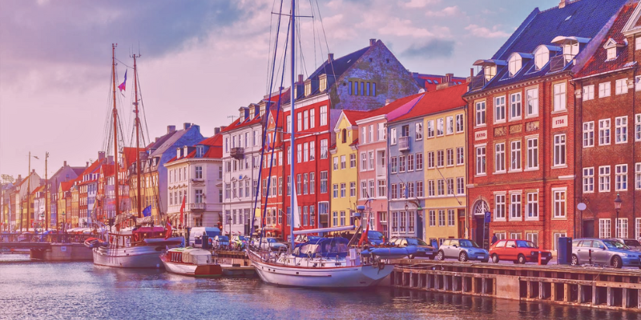

Olá! Me chamo Nara. Sou de Santo Andre - SP, mas já moro há muitos anos em Uberlândia - MG. Tenho 24 anos. Sou formada em Artes Visuais pela UFU, e agora estou cursando Engenharia de Software na UNINTER. Gosto muito de desenhar, ouvir música, jogar, ler, entre outras coisas. Gosto de criar sites, e comecei a brincar com layouts ainda criança, no Blogger e no Tumblr.
⭐ Meus principais hobbies
- 🎮 Jogar
- 🎨 Desenhar
- 🎧 Ouvir música
💖 Países que eu gostaria de visitar:
| País | Imagem |
|---|---|
| Espanha | |
| Itália | |
| Dinamarca |  |
💬 Link de interesse:
O site Game UI Database é especialmente interessante para quem estuda desenvolvimento de jogos! Lá, você pode encontrar as mais diversas UIs, podendo se inspirar nas que mais combinam com o estilo do seu jogo.